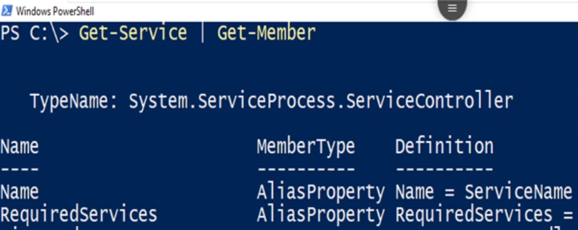
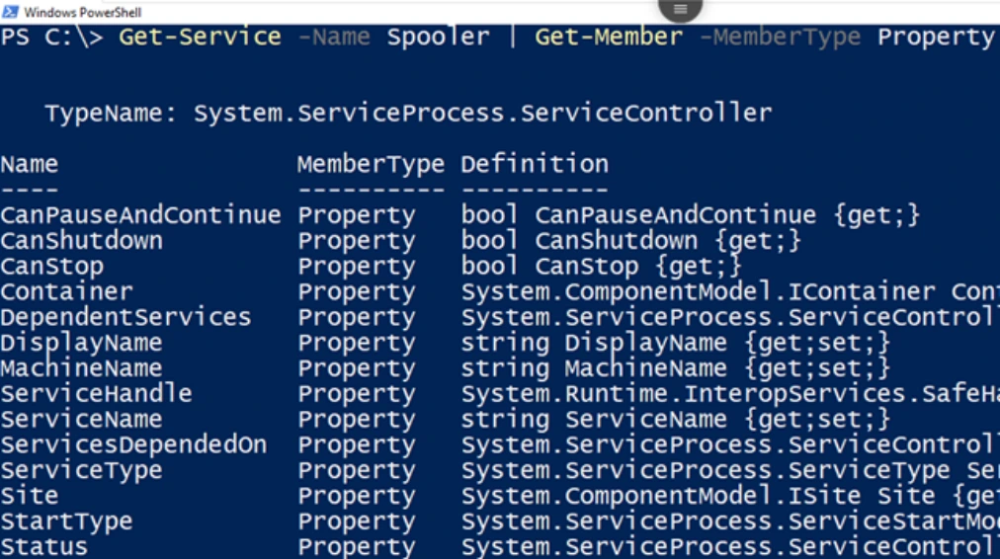
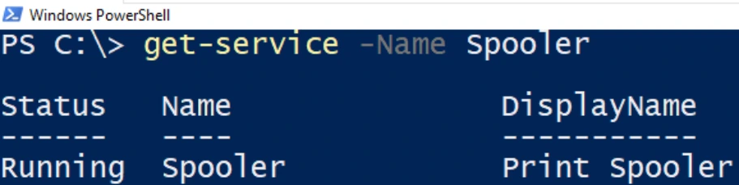
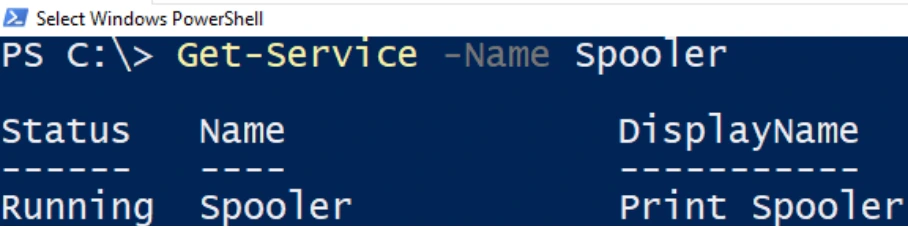
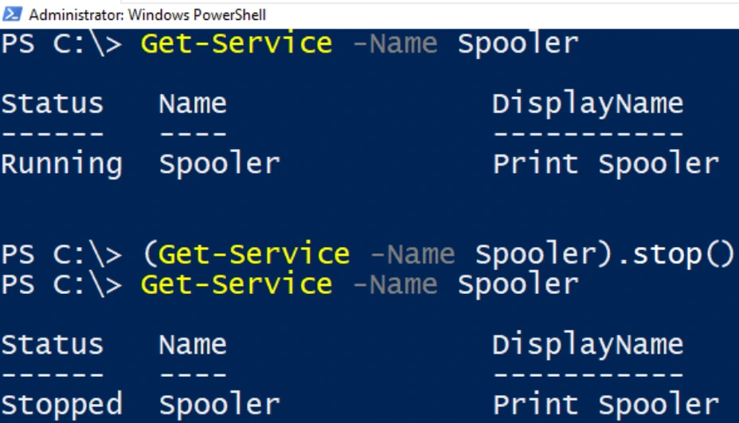
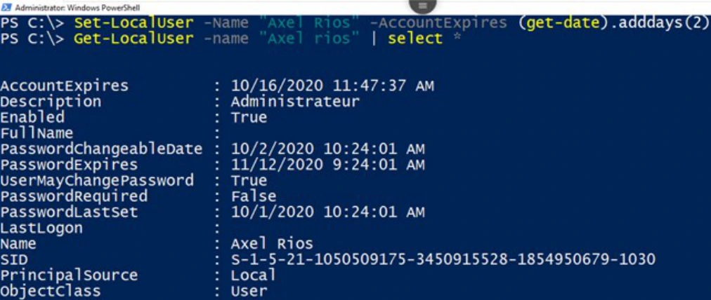

Transcription du support du Drive. Les formulations historiques et les exemples du document sont conservés. Les valeurs d’accès du laboratoire sont indiquées comme « fourni par le formateur ». Les adresses de messagerie personnelles utilisent example.com.
TP du Module 02
Avant de démarrer ce TP, il convient d’avoir suivi les vidéos du module 2 de ce cours.
Durée estimée
30 minutes
Objectifs :
Consignes :
Depuis la machine CLI01 :
Quelle commande avez-vous utilisée ?
Get-Service | Get-MemberDisplayName Property string DisplayName {get;set;}
MachineName Property string MachineName {get;set;}
Equals Method bool Equals(System.Object obj)
GetHashCode Method int GetHashCode()La méthode de type Bool est Equals la méthode de type Int est GetHashCode
Quelle commande avez-vous utilisée ?
get-service -name spooler | get-member -MemberType PropertyQuelles propriétés avez-vous affichées ?
Get-Service -Name SpoolerLes propriétés affichées par défaut sont :
Status Name DisplayName

Running Spooler Print Spooler
Quelle commande avez-vous utilisée ?
Get-LocalUser -NameQuelles propriétés avez-vous affichées ?
Name Enabled DescriptionIndiquez les valeurs de chaque propriété.
Adara Mcintyre True Technician
Modifiez la valeur de la propriété de Description en Administrateur. Quelle commande
avez-vous utilisée ?
Set-LocalUser -Name "adara mcintyre"-Description "Administrateur"
Get-LocalUser -Name "adara mcintyre"Utilisez la Cmdlet pour arrêter le service Spooler. Quelle commande avez-vous utilisée ?
(Get-Service -Name Spooler).stop()Vérifier à nouveau le statut du service.
Get-Service -Name Spooler
Bonus
Utilisez la méthode de l’objet Get-Date pour renseigner la valeur de la propriété
AccountExpires du compte de l’utilisateur Axel Rios.La valeur de la propriété AccountExpires doit être, au minimum, de 48 heures supérieure à la date actuelle.
Set-LocalUser -Name "adara mcintyre"-AccountExpires (get-date).adddays(2)
Set-LocalUser -Name "adara mcintyre"| select *
